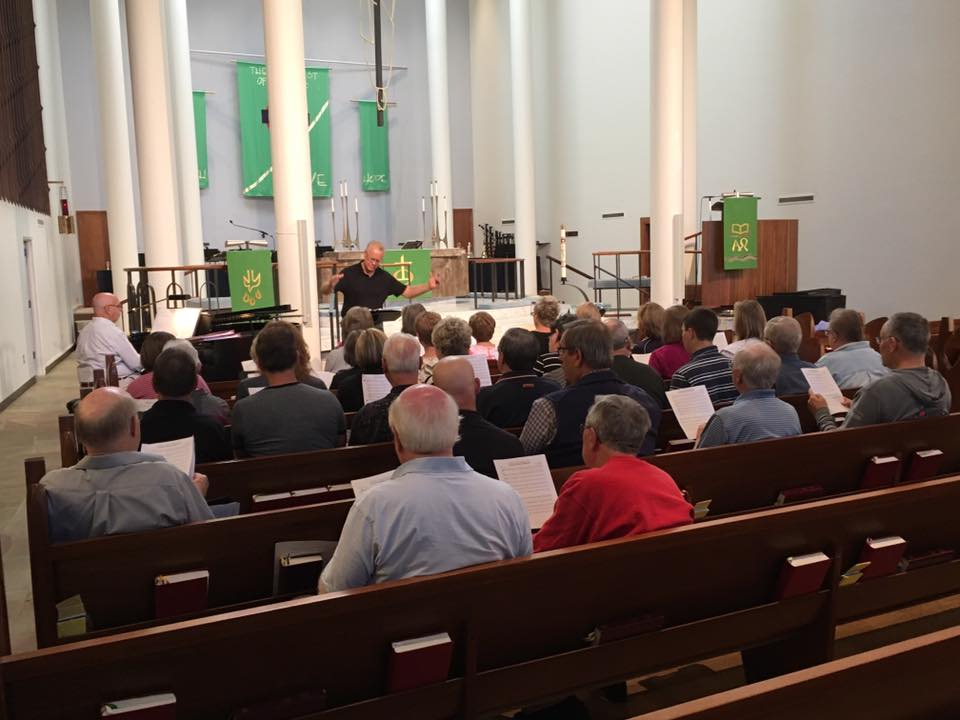
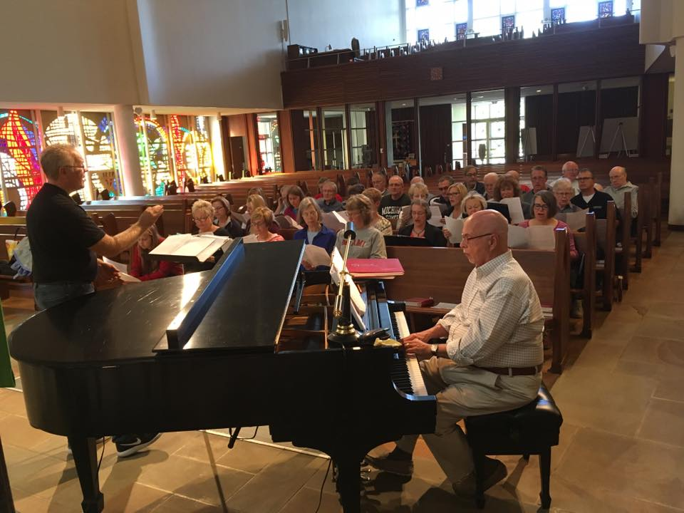
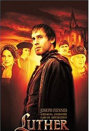

Contact
An undertaking like this requires many resources. If you would like to help in any way, or even if you just have questions about any of the events, please feel free to contact us.
Trinity Lutheran, Christ Lutheran and St. Luke's Lutheran Churches in Grand Rapids are partnering together and with the Greater Grand Rapids Conference of ELCA Lutheran Churches to plan a series of events in observance of the 500th anniversary of the 1517 Reformation.
Our goal is to host a variety of events that highlight the heritage of faith we share due to the Reformation, yet be sensitive to the divisions and pain that have resulted from it. Our focus is on the life of the Spirit in the church, both Lutheran and ecumenically. All events will be open to the public (some may require an admission fee).
Various Locations
During October there will be several sites participating in a 500th Anniversary of the Reformation Art Show. The exhibit celebrates the Catholic Lutheran commitment to making the unifying power of God’s love visible in this divided world. All local artists are invited to participate along with artists from Aquinas, Calvin, Kendall, other area colleges and local Catholic and Christian High Schools to share their art work that communicates the theme “Renewed in Word, Faith and Grace.” Art show venues include Christ Lutheran Church, St. Luke's Lutheran Church, Trinity Lutheran Church, Faith Lutheran Church, Samaritas, and the Catholic Information Center. Registration information may be found here. Direct all other questions to Judy Blank - 814-706-3301.
Wealthy Theatre
A full-length musical stage production based on the 17th century religious reformer Martin Luther, whose struggle to understand God divided the Church, a nation, and the movement he never wanted to create, to be presented at Wealthy Theatre. Ticket prices $10 in advance and $15 at the door, available at the Wealthy Theatre Box Office or online at https://grmcm.org/theatre.
Calvin College Meeter Center (Hekman Room 415), 3:30 pm
A panel including Dr. Kate van Liere, Dr. Mary VandenBerg, Dr. Denice Fett, Rev. Scott Hoezee, and Dr. Bethany Kilcrease will reflect on the meaning of the Reformation from the perspective of their faith and their discipline, Calvin College Meeter Center (Hekman Rm. 415), refreshments will be served.
Kuyper College - Vos Chapel, 7:00 pm
A lecture by Dr. Lyle Bierma, sponsored by the Meeter Center of Calvin College.
Cathedral of Saint Andrew, 3:00 pm
On October 31, 2016, Pope Francis gathered with leaders of the Lutheran World Federation to observe the 499th anniversary of Martin Luther’s nailing of his 95 Theses to the door of the Castle Church in Wittenberg, Germany, with a service of Common Prayer shared at the Lund Cathedral in Sweden. Luther’s act is remembered as the beginning of the Protestant Reformation. On Reformation Sunday, October 29, 2017, the Grand Rapids area community will share that same Common Prayer service at the Cathedral of St. Andrew with Catholic Bishop David John Walkowiak joined by Lutheran Bishop Craig Alan Satterlee in an ecumenical observance of all that binds us as 21st century people of faith. The Diocesan Choir will be joined by choir members from Grand Rapids area Lutheran churches and others in a shared worship observance that will include homilies offered by both bishops. The greater Grand Rapids area community is welcome to share in this historical worship gathering. Service will be at 3:00 p.m.
LaGrave Christian Reformed Church, 3:00 pm & 6:00 pm
An ecumenical worship service co-sponseored by the Calving Institue of Christian Worship.
Calvin College - Hekman Library 4th floor, 8:30 - 3:00
Visit and talk about the Reformation with the Meeter Center, with a presentation of rare books.
Calvin College Chapel
A special service with organ/brass quintet accompaniment to English/German singing of "A Mighty Fortress."
Calvin College Meeter Center (Hekman Room 415), 3:30 pm
A panel including Dr. Matthew Lundberg, Dr. Jamie Smith, Dr. Michelle Loyd-Paige, Rev. Mary Hulst, and Dr. Jordan Ballor will reflect on the meaning of the Reformation from the perspective of their faith and their discipline, Calvin College Meeter Center (Hekman Rm. 415), refreshments will be served.
Calvin Seminary Chapel, 10:00 am
A special service led and coordinated by the Meeter Center of Calvin College.
Calvin College Meeter Center (Hekman Room 415), 3:30 pm
A panel including Dr. Lyle Bierma, Dr. Susan Felch, Dr. Eric Washington, Dr. Laura Smit, and Dr. Suzanne McDonald will reflect on the meaning of the Reformation from the perspective of their faith and their discipline, Calvin College Meeter Center (Hekman Rm. 415), refreshments will be served.
Calvin Seminary, 12:30-1:20 pm
Calvin Seminary Town Hall Meeting Discussion of Why the Reformation Still Matters wtih Author Dr. Darin Maag, Seminary Student Center.
Catholic Information Center
The 500th Anniversary of the Reformation coincides with 50 years of intentional Catholic Lutheran Dialogue. Dr. Kathryn Johnson and Rev. Brian Daley were members of the ecumenical task force for the “Declaration on the Way: Church, Ministry, and Eucharist,” which identifies agreements already reached in dialogues between Catholics and Lutherans on those topics. The heart of the Declaration is the “Statement of Agreements,” which draws together 32 consensus statements, where Catholics and Lutherans have already said there are not church-dividing differences between them. Rev. Daley and Dr. Johnson will be discussing a more tentative section of the Declaration that identifies some remaining differences, suggesting ways forward to greater consensus and unity. Tuesday, November 14, 2:30-8:45 pm. Please preregister by calling 616-459-7267.
Trinity Lutheran Church - 3:00 pm
Hymns both old and new were performed by a mass choir, brass ensemble, and congregational participation in the acoustically marvelous setting of Trinity Lutheran Church. Special guest John Ferguson led a musical journey of faith over the last 500 years. Singers and choirs from ELCA congregations in the Greater Grand Rapids Conference participated in the mass choir. It was a joyous occasion, and an excellent way to kick off a year of remembrances for Reformation 500. See below for upcoming events.
 Celebration Cinema North
Joseph Fiennes stars in this biography of Martin Luther, which was nominated for several awards, winning four, including the Columbus International Film & Video Festival in 2004. The film tells the story of Martin Luther from his vow to be a monk and culminates in his confrontation with the ruling cardinals and princes after being charged with heresy. How appropriate to remember Luther's reforms the day after the anniverseray of his death (Feb 18, 1546) as we mark 500 years of the reformation. The movie will be shown at Celebration Cinema North (2121 Celebration Dr NE, Grand Rapids, MI 49525) at 3:00 pm. Free admission.
St. Luke's Lutheran Church - 7:00 pm
A special service of healing and prayer for unity between Lutherans and Catholics. The service will include an open time during which attendees may receive prayer and anointing for healing from either physical, mental, spiritual or relational ailment.
Central Reformed Church
On Monday, May 1, at 7:30 pm, this Bach Chorale of Grand Rapids chamber concert will include Mr. Salyutov performing Liszt's Fantasy and Fugue on B-A-C-H; Eric Tanner and Jeremy Crosmer will join him to play the famous Trio in B major op. 8 by Johannes Brahms. The Bach Chorale will sing two motets by Brahms, “Es ist das Heil uns kommen her” and “Schaffe in mir, Gott, ein reines Herz,” as well as C. V. Stanford's "If ye then be risen with Christ." Tickets available at bachchoralegrandrapids.org. This event is co-sponsored by Calvin College and the Meeter Center.
Christ Lutheran Church
This event is a fundraiser for the performance of "Reformation" planned for October. A German meal will be served and several songs from the musical will be performed by special guests. This event is targeted particularly at all who wish to support the musical as cast, crew, planners, or financial supporters, former "Reformation" cast & crew, and the "simply curious." The event is free, donations and advance reservations are requested. Contact Gary Sironen, Minister of Music at Christ Lutheran Church for more information.
St. Luke's Lutheran Church
The Tookula Youth Choir from Minden Germany will be returning to St. Luke's for the third time to present a varied concert of sacred and popular music, with an emphasis on music of the Reformation. Featuring up to 60 young people from ages 12-19, this exceptional choir performs with marvelous and unified artistic expression. They will present a concert on Sunday, July 16 at 3:00pm. Free admission.
Calvin College
This exhibit entitled "Stirring the World: Printmaking in the Age of Martin Luther" will include portraits and theological writings of Luther and his contemporaries, sixty engravings and woodcuts, as well as numerous prints depicting biblical and mythological narrative scenes. This event is co-sponsored by the Meeter Center and Calvin College, and more information can be found at https://calvin.edu/academics/departments-programs/center-art-gallery/exhibitions/
Catholic Information Center
The Catholic Information Center will be hosting the conference "500th Anniversary of Reformation: From Conflict to Communion", co-sponsored by the CIC, the Cathedral of St. Andrew, Christ Lutheran Church, St. Luke's Lutheran Church, and Trinity Lutheran Church. Special guest speakers include Dr. Karin Maag, Director of H. Henry Meeter Center for Calvin Studies at Calvin College and Dr. Susan K. Wood, Sister of Charity of Levenworth, Kansas, Professor of Systematic Theology at Marquette University, Wisconsin. The event will take place Saturday, September 9, 8:30am - 12:30pm at the Catholic Information Center, 360 Division Ave. S, Suite 2A. Cost is $15.00 per person. Please preregister by calling 616-4597267
Trinity Lutheran Church
Martin Luther's reforms addressed the church's teachings and practices as well as the societal realities of the sixteenth century. In this ecumenical program sponsored by the Catholic Information Center and Trinity Lutheran Church, learn more about Luther's insights, subsequent social reforms and how the Reformation became on of the most far-reaching events in world history. Presented by Dr. Kurt K. Hendel and Dr. Philip D.V. Krey at Trinity Lutheran Church on Tuesday, October 3, 7:00-8:30 pm.
An undertaking like this requires many resources. If you would like to help in any way, or even if you just have questions about any of the events, please feel free to contact us.

2700 Fulton St E
Grand Rapids, MI 49506